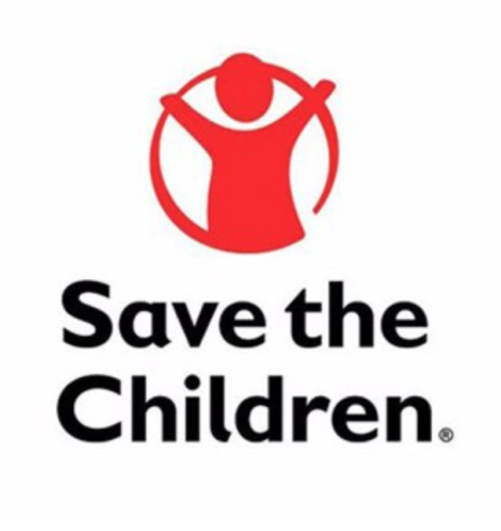

The Boys and Girls Club
Boys & Girls Clubs help millions of kids and teens develop essential skills, make lasting connections and have fun.CharityWater
1 in 10 people lack access to clean water. CharityWater are on a mission to change that.Asha Foundation
Asha Foundation wants to help differently-abled children in society and orient them towards a more fulfilling life.Water.org
Water.org brings safe water and sanitation to the world through access to small, affordable loans.
Doctors without Borders
Doctors without borders raises funds, creates awareness, and advocates with the United Nations and US government on humanitarian concerns.

Save the Children
Save the children promotes children's rights, provides relief and helps support children in developing countriesAmerican Red Cross
The American red cross responds to emergencies and helps people affected by disasters